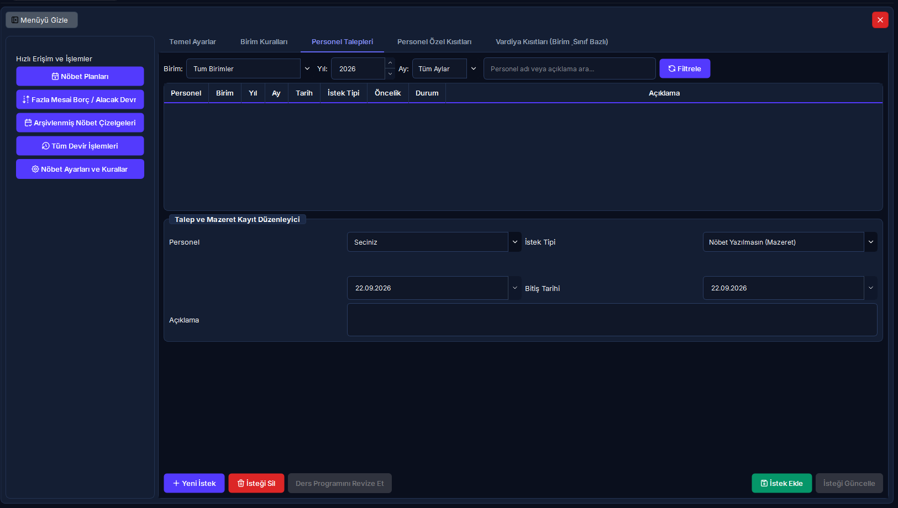

Personel Talepleri, Mazeretler & Onay Yönetimi
Planlanacak aya yönelik nöbet istememe (mazeret), nöbet isteme, hafta içi lisansüstü eğitim ders programı ve isteğe bağlı fazla mesai taleplerinin kaydedilmesini, ders programı revizyonunu ve birim amiri onay/red akışını yönetmenizi sağlar.
Kısa Reçete: Personel Taleplerinin Yönetimi ve Onay Akışı
Personelin haklı mazeret ve ders programlarının klinik adalet bozulmadan dağıtım motoruna eksiksiz iletilmesi.
[Personel Talepleri] sekmesinde yıl, ay ve birimi süzüp [Filtrele] butonuna basın; talebi inceleyip uygun olanları [Onayla], sakıncalı olanları [Reddet] ile sonuçlandırın.
Yalnızca onaylı talepler dağıtım motoru kısıt havuzuna girer; aynı güne birden fazla talep çakışırsa en koruyucu kural öncelik sırasıyla işletilir.
5N1K Kural ve Arayüz Çözümleme Tablosu
Personel Talepleri sekmesindeki koruma kilitleri, talep öncelik sıralaması ve ders revizyon mekanizmaları.
Arayüz Ekran Görünümleri

Adım Adım İşlem Rehberi
1. Yeni Talep Ekleme veya Personelin Taleplerini Süzme
- [Personel Talepleri] sekmesinde Dönem Yılı, Ay ve Departman seçip [Filtrele] butonuna tıklayın.
- Yönetici olarak doğrudan talep tanımlamak için [Yeni İstek] butonuna basın; Personel, Talep Türü, Tarih Aralığı (ve eğitim ise [Pazartesi]–[Cuma] günleri), varsa ilgili vardiya ve gerekçeyi doldurup [İstek Ekle] butonuna tıklayın (düzeltmelerde [İsteği Güncelle], kaldırmada [İsteği Sil] kullanılır).
2. Talep Onaylama, Reddetme ve Eğitim Programı Revizyonu
- Tablodan incelenecek talebe tıklayın ve aynı gündeki klinik personel yoğunluğunu değerlendirin.
- Uygun mazereti [Onayla] ile kısıt havuzuna aktarın; hizmet aksaması yaratacak talebi [Reddet] butonuna basarak onaylayın.
- Mevcut bir eğitim kısıtının ders günleri dönem ortasında değiştiyse satırı seçip [Ders Programını Revize Et] butonuna basın; revizyon başlangıç tarihini ve yeni hafta içi günlerini seçip kaydedin.
Sıkça Sorulan Sorular (SSS)
Personel talep giriş tarihini kaçırırsa birim amiri adına kayıt açabilir mi?
Evet. Birim sorumlusu veya yetkili yönetici bu ekrandan [Yeni İstek] ile personel adına doğrudan talep oluşturabilir ve onaylayabilir.
"Nöbet Yazılmasın (Mazeret)" ile "Nöbet Yazılsın (İstek)" arasında motor önceliği farkı nedir?
Amir tarafından onaylanan mazeret talebi motor için sert kısıttır; uygun aday bulunamasa dahi personel o güne yazılmaz. "Nöbet Yazılsın" talebi ise yüksek öncelikli tercihtir; 24 saat dinlenme veya fazla mesai gibi sert kurallarla çakışmadığı sürece karşılanır.
Eğitim kısıtı seçtiğimde neden hafta sonu günleri görünmüyor?
Eğitim kısıtı hafta içi örgün ders programlarını korumak üzere tasarlanmıştır; hafta sonu için mazeret verilmesi gerekiyorsa talep türü olarak Nöbet Yazılmasın (Mazeret) seçilmelidir.